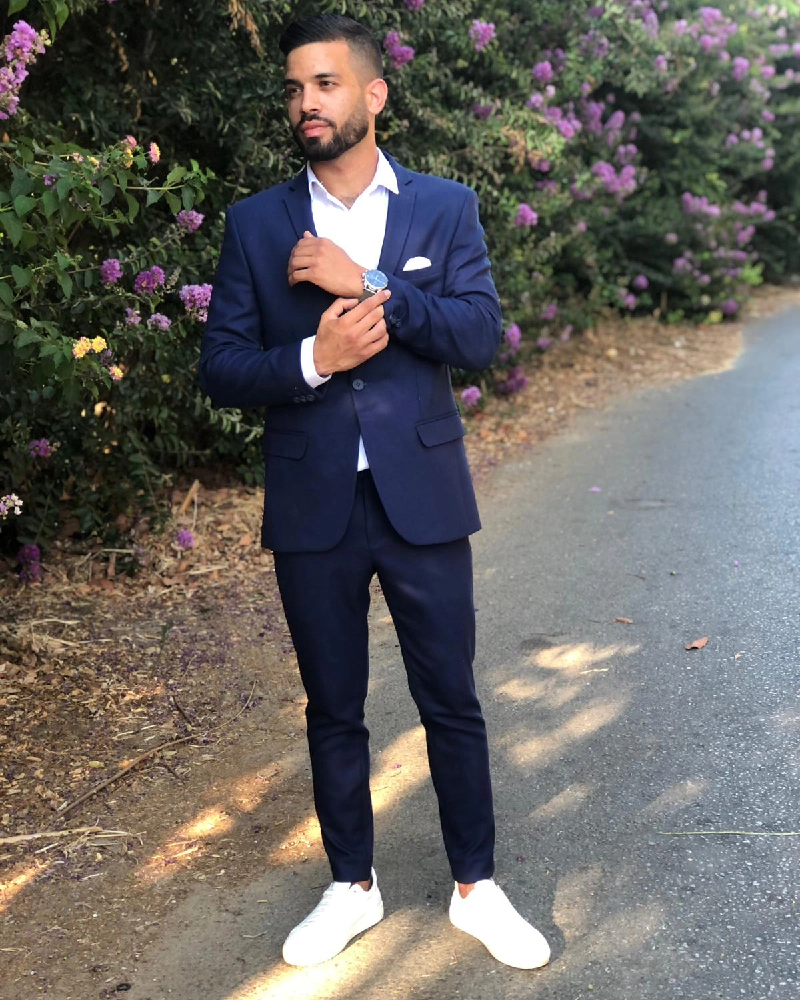
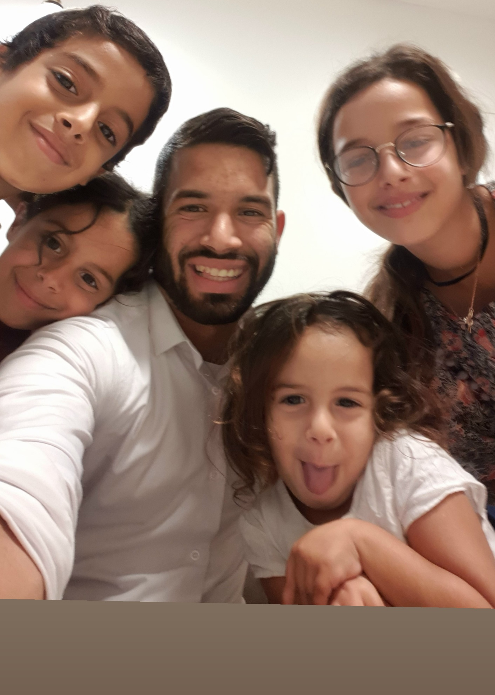
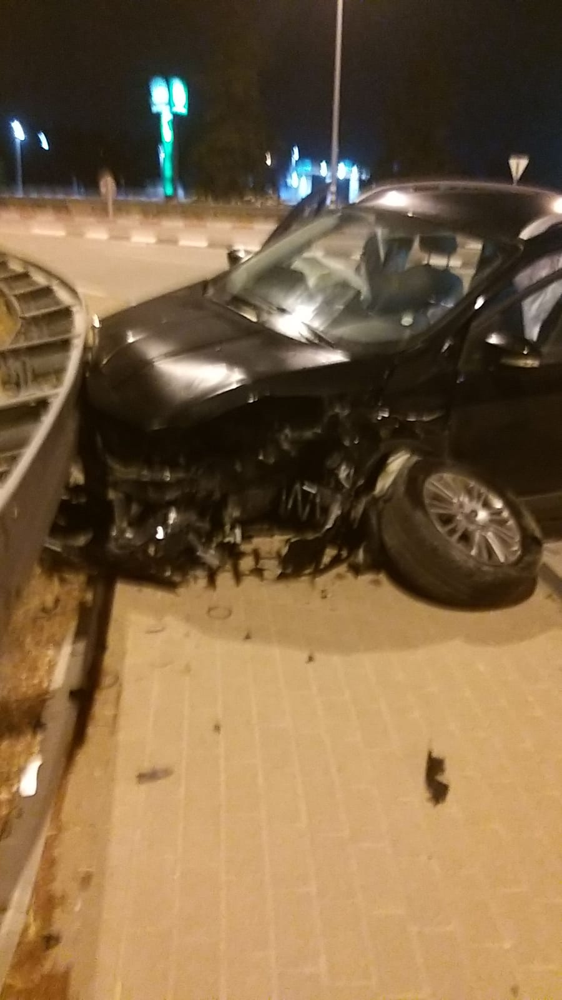
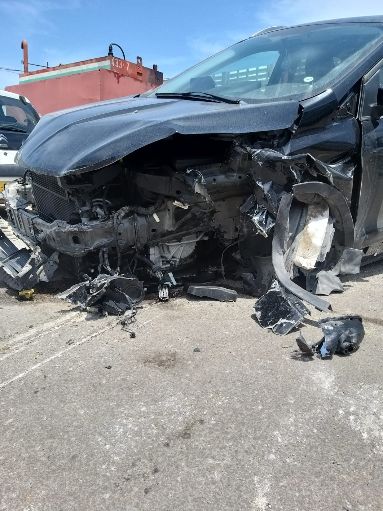
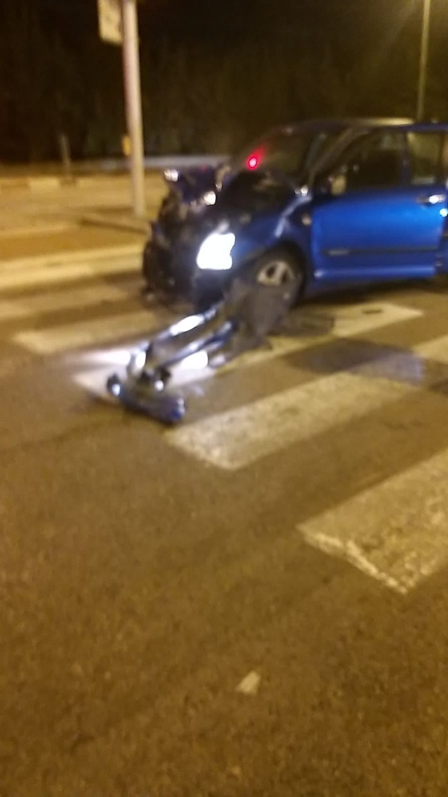
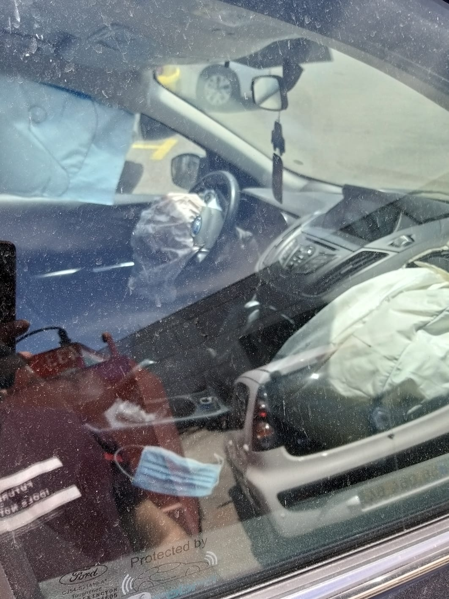

<html>
</html><head>
<title>The road not taken</title>
<link rel="stylesheet" href="styles.css">
</head>>
<body>
<center> 
<h1>The Road Not Taken </h1>
<h2>About Me</h2>


<p><b>
hello and welcome to my web about the poem "The Road Not Taken".before i tell you about this poem i want to introduce you who am i?
<br>my name is malachy gueta im 24 years old lived in <a href="https://he.wikipedia.org/wiki/%D7%99%D7%91%D7%A0%D7%94" target="_blanck">yavne</a>.
<br>in 10/05/2020 i was involved in a car accident with my friends and i dont know how we end up with little scratches on our body instead of being dead.
<br>it was in 3 at night we were back from a birthday to our friend and i was in the back sit in the middle with my seat belt on
<br>on the way home my friend didnt look for a second on the road and he cross a red light and crash into another car that was turn left
<br>we all were in shocked and the car was smookin and we run outside and see if someone gut hurt,in a miracle no one was bad injured but we were still evacuated to a hospital by ambulance
<br>after i understood how my life was saved i understand to appreciate and say thanks to everything in my life even the air that im breathing.
<br>and this is why i want to show you this poem and hope to make you see the good side in life and always be positive
<br>this is my first website that i make as part of my studies to be an a qa tester
<br>i hope you enjoy from this web and contact me if you think you have some advise for me.this is my email:<b><u>malachyg7@gmail.com</u></b> and you can also find me on facebook by the name:<b><u>מלאכי גואטה</b></u>
<br>here some pictures from the accident so you can understand how bad it was.
<br>

<br>

</b>

</p> 
<h3>The Poem</h3>
<p><b>
Written in 1915 in England, "The Road Not Taken" is one of Robert Frost's—and the world's—most well-known poems.
<br> Although commonly interpreted as a celebration of rugged individualism, the poem actually contains multiple different meanings.
<br> The speaker in the poem, faced with a choice between two roads, takes the road "less traveled," a decision which he or she supposes "made all the difference.
<br>" However, Frost creates enough subtle ambiguity in the poem that it's unclear whether the speaker's judgment should be taken at face value, and therefore, whether the poem is about the speaker making a simple but impactful choice, or about how the speaker interprets a choice whose impact is unclear.
</b>
</p>

<a href="https://www.poetryfoundation.org/poems/44272/the-road-not-taken" target="_blanck"></a>
<h4>The Meaning in my view:</h4>
<p><b>
you probably read the poem and ask yourself how this poem related to the real life right?well let me show you how.
<br>in the poem we see a random traveller that have to choose between two different roads.
<br>he choose the road that looked less complicated after a long time that he was trying to see as far has he could for the two roads
<br>he was so sad that he could not take them both,thinking what could have been in the other way.
<br>at the end of the poem he say's that he took the road that was less traveled by and thats make all the different which mean that he didn't walk like all the travellers.</b>
<br><div><b>now let me show you how its related to our life:</div></b><p><b>there is a points in our life where we need to choose how to move on.
<br>we wish that we knew what would happen after we will make our choices but in life we cant really knew.we have to choose and take risks somtimes without really knowing what will happened.
<br>even when we decide on one way we always thinking about what if we were chooseing the "other way", do things defferent
<br>for example in realationship when things become hard you can choose to give up and breakup it is the easy way but you can fight and figure out a solution even if it is a more hard way to take.
<br>i think that in our life we got a times where we ask ourselfe's "what if we were doing things in the past changing our decisions"? or "why i didnt choose the other way" and living our past.
<br>i think that living in mindeset like this will make us sad and not living our life. in this moment we need to be whole with our decisions and keep going to the future.
<br>we need to understand that we cant go back,<u> we just go foreward and learn from our mistakes in the past,be better!.</u></b>
<br><b> here some video of motivation speech from kevin hart that will make you be more positive on life</b>
<br> 
<iframe width="560" height="315" src="https://www.youtube.com/embed/pbKqoX_-_IQ" title="YouTube video player" frameborder="0" allow="accelerometer; autoplay; clipboard-write; encrypted-media; gyroscope; picture-in-picture" allowfullscreen></iframe>
<br><b>and this is a song that speak about seeing the good in life,hope you like it</b>
<br>
<iframe width="560" height="315" src="https://www.youtube.com/embed/aRBu0Zyh01c" title="YouTube video player" frameborder="0" allow="accelerometer; autoplay; clipboard-write; encrypted-media; gyroscope; picture-in-picture" allowfullscreen></iframe>
</p>

</p>


 </center>
</body>


</html>